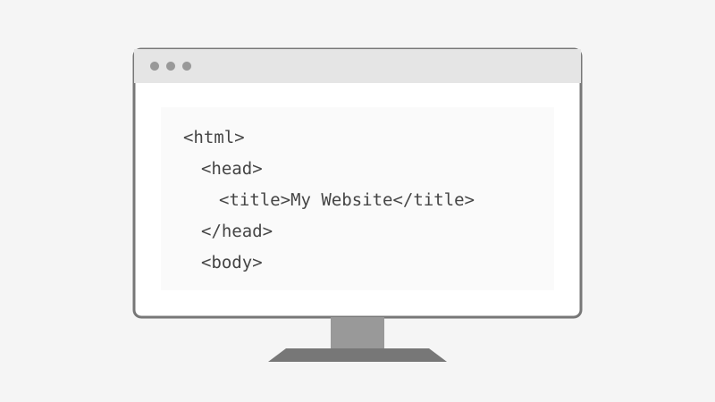

اسم الطالبة: Malak Hamdy
الرقم الجامعي: 2504220
المقرر تطبيقات الانترنت
أصبح الذكاء الاصطناعي التوليدي من التقنيات الحديثة التي تساعد في مجالات عديدة، ومنها تطوير مواقع الويب. فهو يساعد المبتدئين على فهم الأكواد البرمجية، والتعرف على لغات تصميم المواقع، واكتشاف الأخطاء البرمجية. ويهدف هذا التقرير إلى توضيح مفهوم الذكاء الاصطناعي التوليدي، ودوره في مساعدة مطوري الويب المبتدئين، مع عرض أمثلة بسيطة توضح كيفية الاستفادة منه.
الذكاء الاصطناعي التوليدي هو نوع من الذكاء الاصطناعي يستطيع إنشاء محتوى جديد، مثل النصوص والصور والأكواد البرمجية، بناءً على طلب المستخدم. ويمكن الاستفادة منه في تعلم تطوير الويب، لأنه يساعد المبتدئين على فهم لغات البرمجة مثل HTML وCSS وJavaScript، وشرح الأكواد بطريقة مبسطة تسهل عملية التعلم.
يمكن للمطورين المبتدئين استخدام أدوات الذكاء الاصطناعي التوليدي في العديد من المهام، مثل كتابة أكواد HTML لإنشاء صفحات الويب، وتنسيق الصفحات باستخدام CSS، وكتابة أكواد JavaScript لإضافة التفاعل. كما يمكن لهذه الأدوات اقتراح أفكار لتصميم المواقع، والمساعدة في اكتشاف الأخطاء البرمجية وشرح أسبابها، مما يجعلها وسيلة مفيدة للتعلم والتدريب.
يساعد الذكاء الاصطناعي التوليدي على توفير الوقت والجهد أثناء تطوير المواقع، كما يسهل فهم المفاهيم البرمجية للمبتدئين من خلال تقديم الشروحات والأمثلة. ويساعد أيضًا في تجربة حلول مختلفة للمشكلات البرمجية، وتوليد أفكار جديدة للتصميم. ومع ذلك، يجب على المطور مراجعة الأكواد الناتجة واختبارها، لأن الأدوات قد تقدم معلومات غير دقيقة أو أكوادًا تحتوي على أخطاء.
على الرغم من فوائد الذكاء الاصطناعي التوليدي، فإن استخدامه يواجه بعض التحديات، مثل احتمال إنتاج أكواد غير صحيحة أو غير آمنة، وتقديم معلومات غير دقيقة. كما أن الاعتماد عليه بشكل كامل قد يقلل من فرص المبتدئ في تنمية مهاراته في حل المشكلات بنفسه. لذلك، ينبغي استخدامه كأداة مساعدة مع فهم الأكواد ومراجعتها واختبارها قبل استخدامها في المشروعات الحقيقية.

| الاستخدام | دوره في تطوير الويب |
|---|---|
| HTML | إنشاء صفحات الويب |
| CSS | تنسيق صفحات الويب |
| JavaScript | إضافة التفاعل إلى الصفحات |
| اكتشاف الأخطاء | توضيح أسباب الأخطاء البرمجية |
في الختام، أصبح الذكاء الاصطناعي التوليدي من الأدوات المفيدة في مجال تطوير الويب، خاصةً للمبتدئين، حيث يساعدهم على تعلم البرمجة وكتابة الأكواد واكتشاف الأخطاء. ومع ذلك، تظل مهارات المطور وفهمه للكود ضرورية للحصول على نتائج صحيحة وآمنة. لذلك، فإن أفضل طريقة للاستفادة من هذه التقنية هي استخدامها لدعم التعلم والإبداع، وليس الاعتماد عليها بشكل كامل.